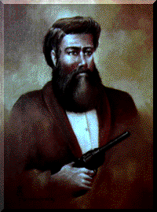

Ned Kelly is one of the very few Australian historical figures whose name is known to virtually all Australians. Although Ned, at the age of 25 was convicted and hanged as a common outlaw by the British establishment, most Australians accept him to be a hero. Indeed to this very day he is considered to be a revolutionary. This view is supported by the fact that Ned Kelly, in company with a gang of three, attempted to attack a police troop train at Glenrowan station in Victoria.
Only now, 115 years after his execution, Australians finally have the courage to vocalize republican sentiments without fear of British reprisal. Those not familiar with the story of Ned Kelly will find it enlightening to do some basic research on the short but courageous life of the man.
Superbly painted by Australian artist Rick Radahanichekevski - know by some as 'the Rembrant of South Australia' for his unique ability to reproduce works of art painted by the great masters of the Renaissance - this compelling portrait of Edward (Ned) Kelly reveals "the man behind the mask" as never seen before.
Rick Radahanichekevski was specifically chosen and commissioned to paint this stunning portrait by Arthur Wunderlich, currently studying psychology and sociology at Deakin University in Victoria.
The historic quality print of 'The man behind the mask' exclusively presented by Australian Enterprise Publications comes with an individually numbered certificate of authenticity. Printed in full colour (383mm x 305mm - 15" x 12"), this exquisite limited edition collectors item is ideal for display in your home or office.
This awe-inspiring framed lithographic print is the perfect heirloom for those interested in Australian Colonial History.
For more information please write to to:
Australian Enterprise Publications
PO Box 834 Salisbury
South Australia 5108
or send e-mail to
hyamp@ozemail.com.au, or fax on +61 8 396 5795.
Please allow 28 days from receipt of your order for delivery.
| Other sites relating to Ned Kelly |
Such is Art
For Australians the Bushranger Ned Kelly has become a national icon.
Marcus Stacey takes a look at Sir Sidney Nolan's famous Kelly series of paintings. |
 Virtual Artists Pty Ltd.
Virtual Artists Pty Ltd.
Disclaimer: The above web site has been prepared from information provided by our clients. Accordingly, no warranty of accuracy or reliability is given. Neither this firm, nor any employee or member of the firm undertakes responsibility in any way whatsoever to any person (other than our clients) in respect of the web site including any errors or omissions therein however caused.
The Bizarre Bazaar is a Virtual Artists' site.